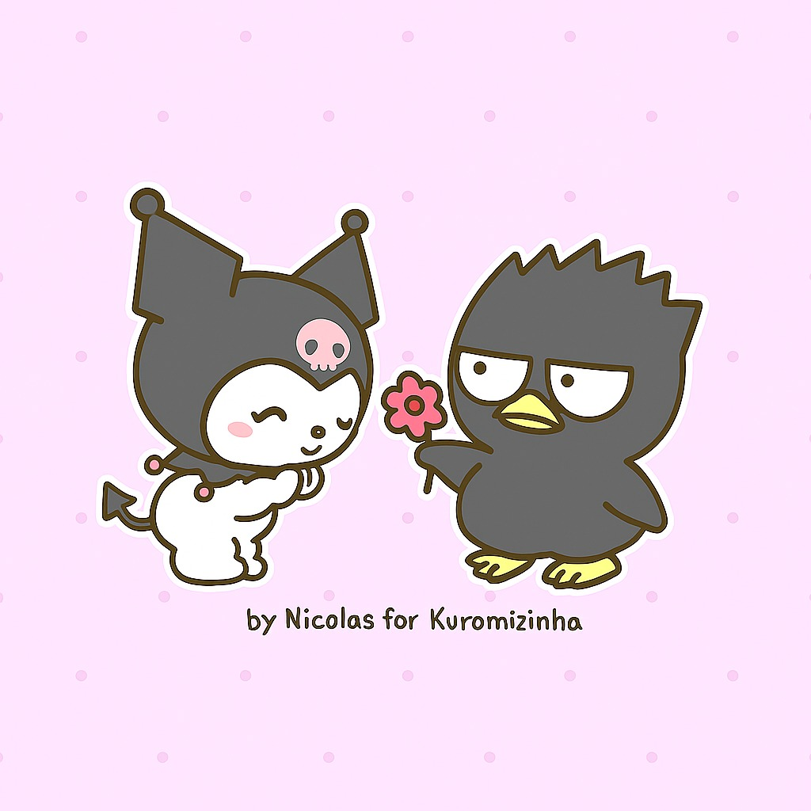

Feito com Carinho por Nícolas - Seu bobão
Espero que goste eu me enpenhei no poema...
espero que ame, eu tenho limitações mas de agora em diante... vai ver :>
"Tenha certeza que esse não vai ser o único aniversario seu que estarei contigo, demais, existe demais pra frente
que estaremos juntos."
🍄 🌸 🌸🍄 CARTA MÁGICA DO SEU TOTORO - ABRA

Eu vou dizer mais coisas pessoalmene um dia...
"You're the thing that connects my brain to my chest, it's because - "
"I pray that I'll die before my favorite - "
"I'll stay at your house where I'll hope that you'll protect me - "

— Nicolas Emanuel, seu admirador...